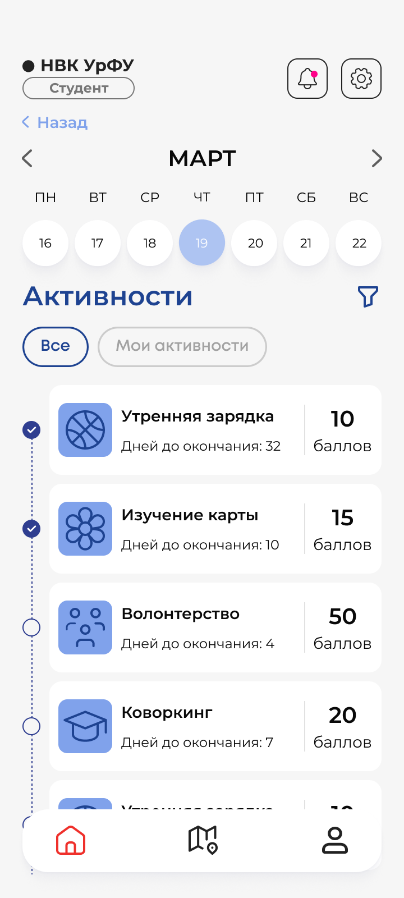
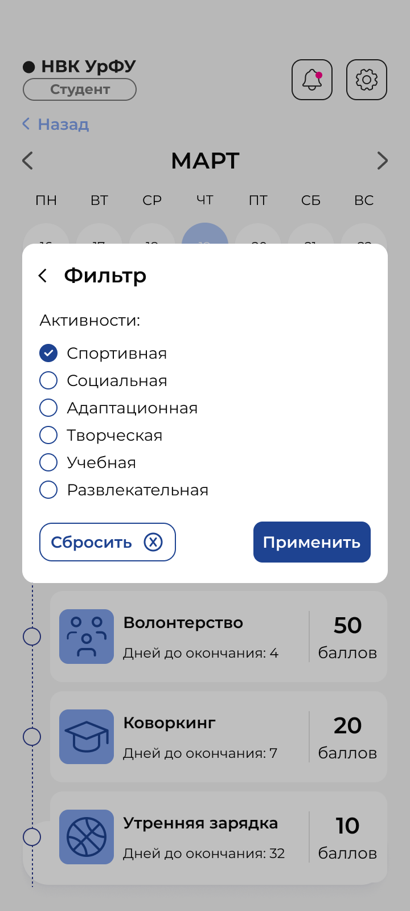
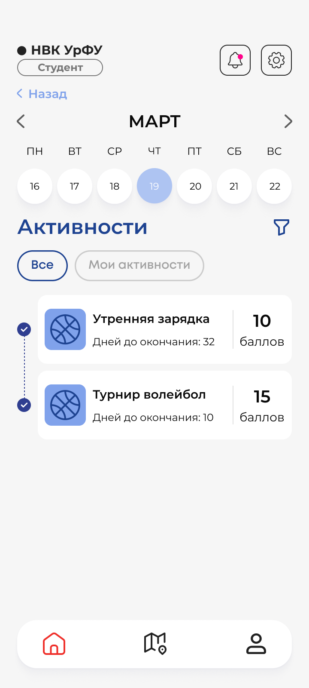
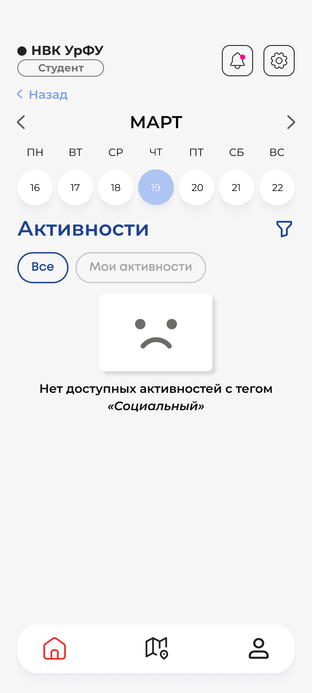
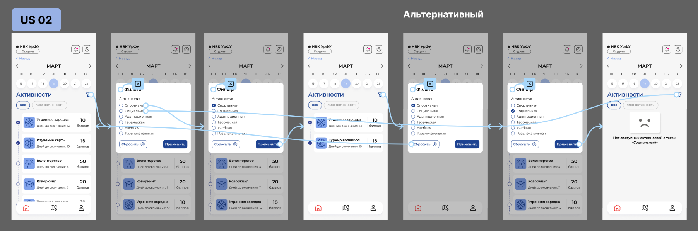
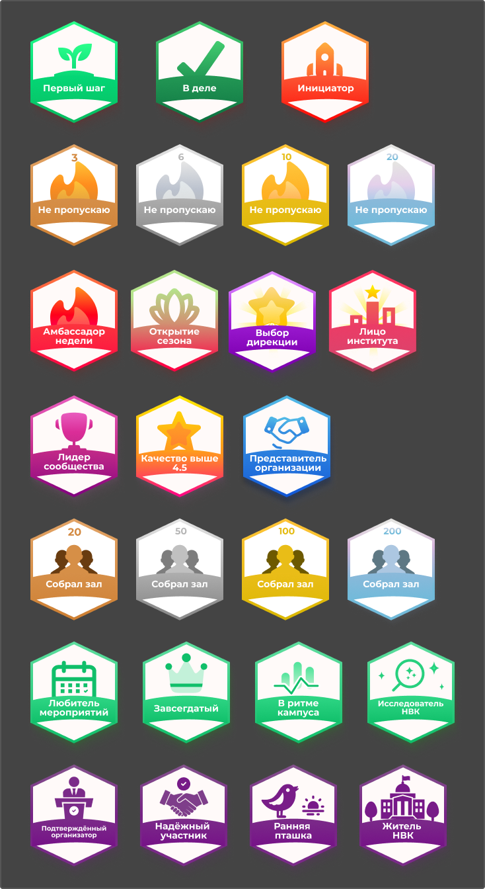

УрФУ.НВК
Приложение для жизни в Новокольцовском кампусе. Я спроектировала вход, профиль, активности, рейтинг и систему бейджей. Приложение вышло в App Store и Google Play.
От user story к экранам
23 участника команды · 3 дизайнераАналитики описывали задачу студента. По каждой истории я собирала экраны в Figma, связывала их в прототип и продумывала, что студент увидит при разных результатах одного действия.
US 02 · Фильтр активностей
Как студент, я хочу выбрать категорию, чтобы найти интересные мне активности.

Открыть фильтр
Выбрать «Спортивная»
Увидеть две активности
Альтернативный сценарий US 02 · Пустая выдача


Система бейджей
Каждый бейдж обозначает отдельное достижение. В профиле студент видит полученные награды рядом со своим уровнем и баллами.

Скринкаст
Релиз
Для публикации я подготовила графические материалы для страниц приложения в App Store и Google Play. Полный функционал доступен с учётной записью УрФУ.
 Следующий проектСайт УрФУ
Следующий проектСайт УрФУ